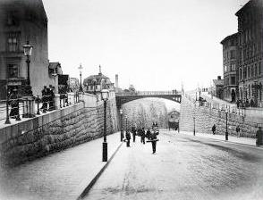
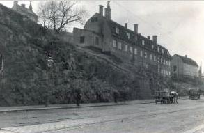
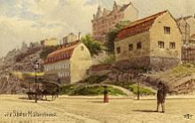
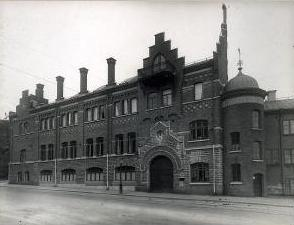
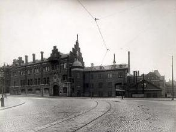

Södermalm i tid och rum. Stockholm
Torkel Knutssonsgatan norr om Hornsgatan
Torkel Knutsson
Ur Stockholms gatunamn
Vid namnrevisionen 1885 gav man namnet Torkel Knuissons gata åt dåvarande »Stora Skinnarviksgatanmed dess raka förlängning norrut». Namnet tillhör kategorien »fosterländska och historiska namn». Beredningsutskottet hade 1884 föreslagit, att Torkel Knutssons namn skulle knytas till en annan gata; seKlippgatan.
Marsken Torkel (Torgils) Knutsson var den ledande mannen inom rådet, som vid Magnus Ladulås död 1290övertog förmyndarregeringen under Birger Magnussons omyndighetstid. Även efter det att Birger vid slutet av1290-talet blivit myndig, behöll marsken sin ställning såsom den ledande politikern. Sina främsta motståndarefick han i kung Birgers bröder, hertigarna Erik och Valdemar; hans maktställning undergrävdes och i december1305 fängslades han och i februari 1306 blev han avrättad. Det finns ett direkt samband mellan Torgils Knutssonoch Södermalm så tillvida som han enligt Erikskrönikan avrättades och begravdes där; senareflyttades hans kropp till Gråmunkekyrkan (Riddarholmskyrkan).
Den »raka förlängningen norrut» som omnämns i namnbeslutet 1885 avsåg den del av gatan, som nu går frånHornsgatan ner till Söder Mälarstrand. Den anlades 1885-1889 och omtalas såsom »upfartsvägen» ett namn somännu används, i varje fall av äldre Söderbor. Den var den första bekväma uppfarten till Södermalm.
 Torkel Knutssonsgatan söderut från Söder Mälarstarand genomfördes 1885-89.  Hus vid Söder Mälarstrand/Torkel Knutssonsgatan 1920. Husen finns kvar idag. Vänstra huset tillhörde vid mitten av 1800-talet kvarteret Kattfoten Större, högra huset kvarteret Skinnarviken Mindre. De är den enda återstående resten av det myller av hus som fyllde och präglade Skinnarviksområdet vid mitten av 1800-talet och tidigare.   Fredrik Isberg, akvarell, 1900 Fredrik Isberg, akvarell, 1900 |  Ludvigsbergs mekaniska verkstad, kontorsbyggnaden från Torkel Knutssonsgatan. Huset övertogs senare av Münchenbryggeriet.
 |